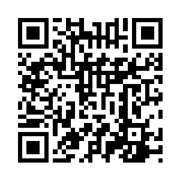

M.E.T.A.S es una plataforma educativa hondureña con misiones interactivas alineadas al DCNB: los alumnos aprenden jugando en cualquier teléfono (incluso sin internet) y el avance llega solo a la cuenta del maestro. Además automatiza el papeleo del aula: asistencia, economía, notas SACE, boleta, Plan de Acción y comunicación con las familias por WhatsApp.
📋 Guión de la sesión (para quien conduce)
| Tiempo | Momento | Qué pasa |
|---|---|---|
| 0–5 min | Bienvenida | Reparta esta hoja. Mensaje clave: «hoy no vienen a escuchar, vienen a usar». |
| 5–20 min | 🚀 Vívelo como alumno | Todos escanean el QR de la misión de prueba (Paso 1) y la resuelven desde su teléfono. La plataforma se explica sola. |
| 20–30 min | 🎓 Crea tu cuenta | Siguen el Paso 2 de esta hoja. Apoye a quien se atore con el correo. |
| 30–40 min | 🔑 Código de aula | Paso 3: cada maestro encuentra SU código y entiende que sus alumnos lo escriben una sola vez. |
| 40–50 min | 🏫 Mi aula y familias | Pasos 4 y 5: cargar 3 alumnos de prueba y ver las claves de familia. |
| 50–60 min | ✅ Cierre | Checklist final (Paso 7) + dónde resolver dudas después (Paso 6). Nadie se va sin su cuenta creada. |
1🚀 Vívelo como alumno (15 min)
- Abre la cámara de tu teléfono y apúntala al cuadro de la derecha.
- Toca el enlace que aparece: se abre la misión «Múltiplos, Divisores y Primos».
- Resuélvela como si fueras tu alumno: flashcards, memorama, retos, sopa de letras…
- Fíjate cómo todo se califica solo y cómo el niño gana XP e insignias.
Así se ven las 57 misiones del catálogo: español, matemáticas, ciencias naturales y sociales, y las materias nuevas de programación 💻, robótica 🤖 e inglés 🗣️ (las dos primeras no necesitan computadoras ni kits), organizadas en 11 rutas de aprendizaje.

2🎓 Crea tu cuenta docente gratis (10 min)
- Escanea el QR de la derecha para abrir la plataforma completa.
- Toca el menú ☰ (arriba a la izquierda) → Zona Docente.
- Toca el botón azul «🎓 Quiero mi aula gratis»: se abre el formulario.
- Llena el formulario: nombre completo (con tus dos apellidos), correo, una contraseña fácil de recordar y tu escuela.
- Toca «✨ Crear mi aula ahora». ¡Listo! Verás tu tarjeta de bienvenida.
- La próxima vez que entres, tu correo y tu contraseña van arriba del todo, en «👋 Bienvenido de vuelta».
- 💡 En tu teléfono, el navegador te ofrecerá «Añadir a pantalla de inicio»: acéptalo y M.E.T.A.S quedará instalada como una app.

metas.policastsapien.com
3🔑 Tu código de aula: el corazón de todo (10 min)
En tu tarjeta de la Zona Docente aparece tu código de aula (5 letras, ej. KQAZF). Funciona así:
- Los alumnos no crean cuentas ni contraseñas: solo el código.
- Sirve igual en el teléfono de la casa, la tablet prestada o el celular del hermano.
- Para verlo después: Zona Docente → tarjeta con tu nombre → «Tu código de aula».
4🏫 Mi aula: tu lista de alumnos manda (10 min)
- Zona Docente → Herramientas del aula → «Mi aula».
- Escribe grado, sección y escuela, y carga 3 alumnos de prueba con su número de lista.
- Esa lista alimenta todo: economía de colectas, asistencia, notas SACE, boleta imprimible y Plan de Acción, sin volver a escribir nombres.
Explora las pestañas: 💰 Economía (colectas con informe y firmas), 📋 Asistencia (pase de lista de excepciones: solo marcas quién faltó), 🧮 Notas SACE (boleta por parcial, lista para imprimir).
5👨👩👧 Las familias, sin cuentas ni complicaciones
- En Mi aula, cada alumno tiene su 🔑 clave de familia (ej. 7-3TQE).
- Imprimes las tiras con la clave y las mandas en el cuaderno.
- El padre o la madre escanea el QR de la derecha, escribe la clave… y ve el avance de su hijo, los comunicados del aula y hasta puede escribirle al maestro.
Sin apps que instalar, sin correos, sin contraseñas para el padre. Solo la clave de su hijo. La privacidad queda protegida: cada clave abre únicamente a ese alumno.

6🆘 ¿Dudas después de hoy?
- Guías ilustradas paso a paso: escanea el QR de la derecha.
- Buzón directo al creador: en la app, menú ☰ → Ajustes → «Escríbele al creador del proyecto». Tu mensaje le llega de verdad.
- ¿Olvidaste tu contraseña? En la pantalla de entrada de la Zona Docente está el botón para recuperarla con tu correo.

7✅ Salgo de esta capacitación con…
- Resolví una misión completa como alumno y vi cómo se califica sola.
- Mi cuenta docente creada (correo + contraseña que recuerdo).
- M.E.T.A.S instalada en la pantalla de inicio de mi teléfono.
- Sé dónde está mi código de aula y cómo lo usarán mis alumnos.
- Cargué alumnos de prueba en «Mi aula» y encontré las claves de familia.
- Sé dónde están las guías y cómo escribirle al creador si me atoro.